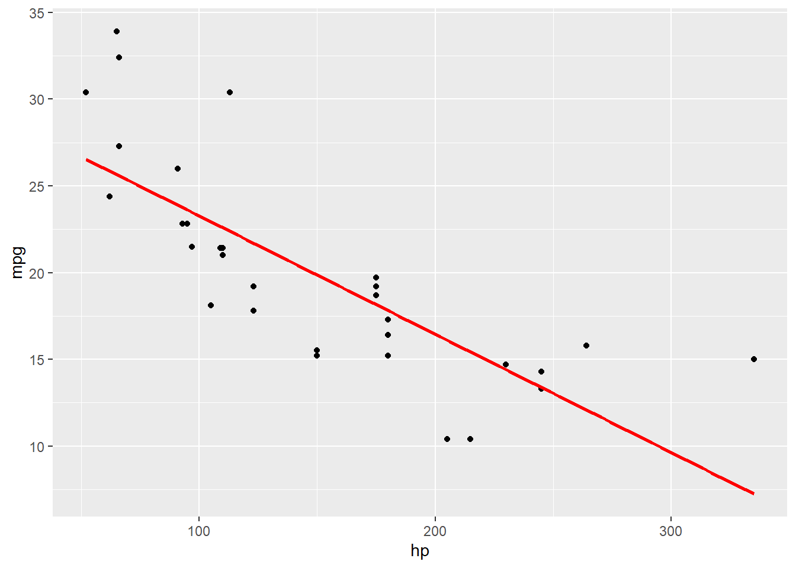
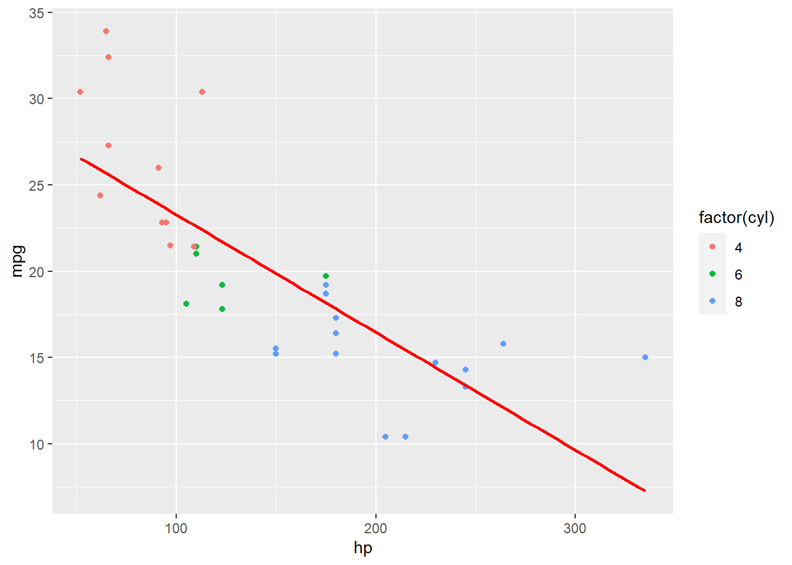
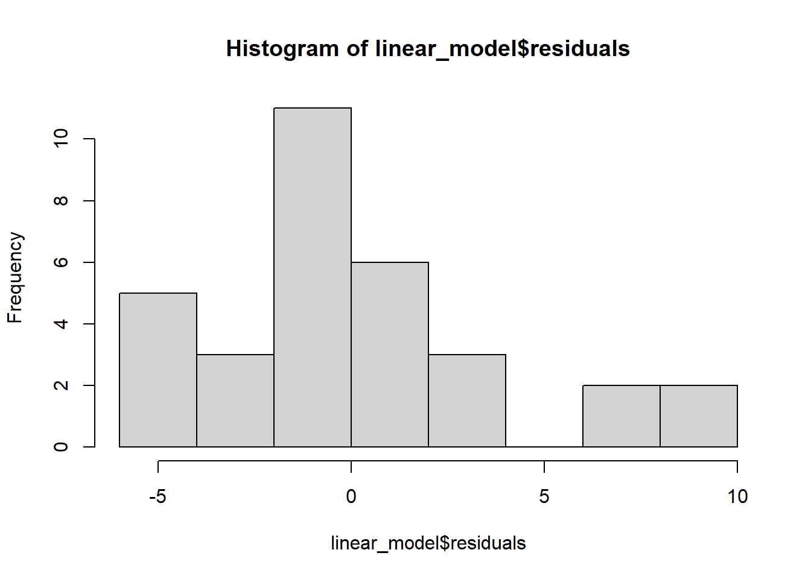
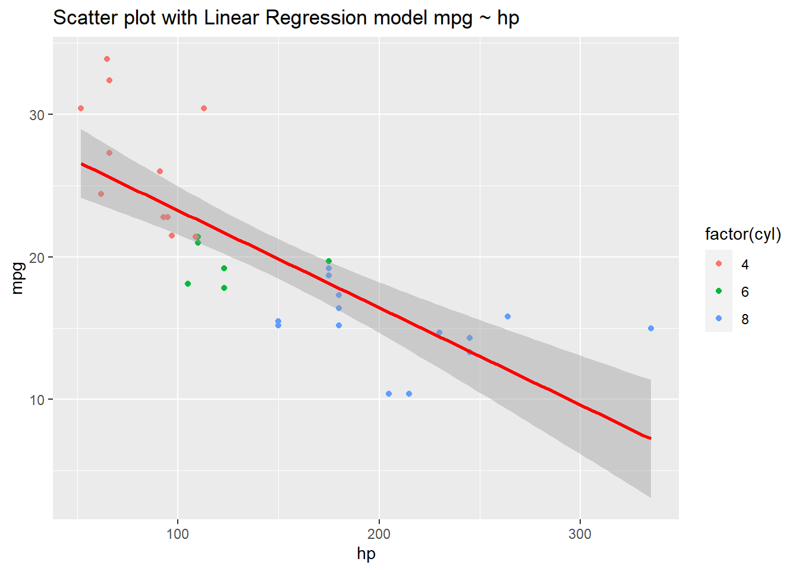
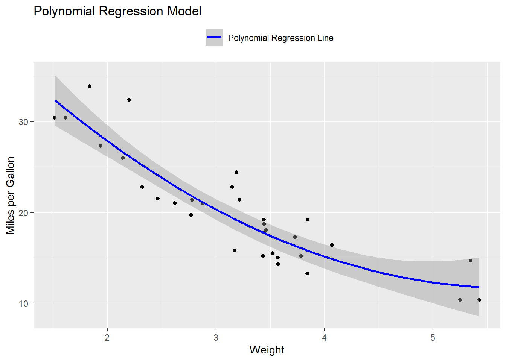
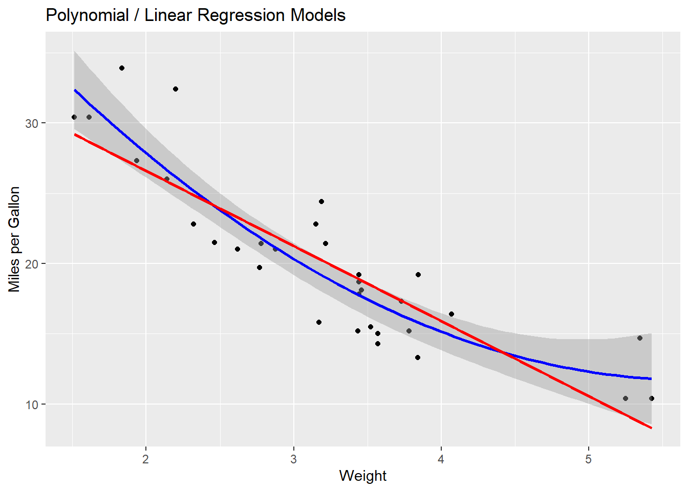
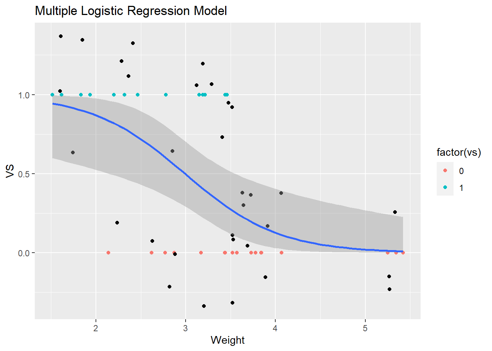
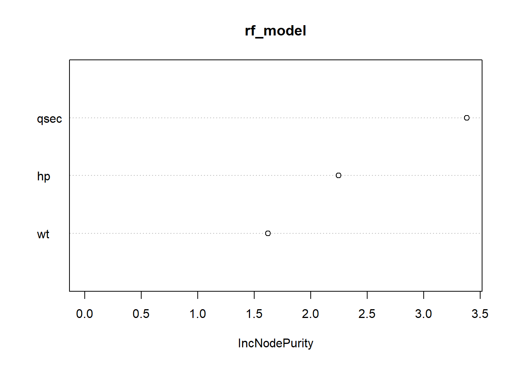

Introduction to Predictive Analytics - Regression part 2
MB
2023-01-26
Regression is a statistical technique that is used for predictive analytics, with the goal of understanding the relationship between a dependent variable and one or more independent variables. It is used to predict a continuous outcome variable (such as price, temperature, etc.) based on one or more input variables. There are several types of regression, including linear regression, logistic regression, and polynomial regression.
In the context of machine learning, regression is considered a supervised learning technique, as it involves using labeled training data to learn a mapping from input variables to output variables. The goal of the model is to minimize the difference between the predicted values and the actual values in the training data. Once trained, the model can be used to make predictions on new, unseen data. Regression models can be used in a wide range of applications, such as forecasting, trend analysis, and causal inference.
Supervised and unsupervised machine learning are two different approaches to training models in R.
Supervised learning is a method where a model is trained on a labeled dataset, with input-output pairs. The model learns to predict the output based on the input. Common types of supervised learning models in R include linear regression, logistic regression, decision trees, and random forests.
Unsupervised learning, on the other hand, is a method where a model is trained on an unlabeled dataset. The model is not given any specific outputs to predict, but instead learns to identify patterns and structure in the data. Common types of unsupervised learning models in R include k-means clustering, hierarchical clustering, and principal component analysis (PCA).
In summary, supervised learning is used when the desired output is known, and the model is trained to predict that output. Unsupervised learning is used when the desired output is not known, and the model is trained to identify patterns and structure in the data.
Types of regression we will look at :
Linear Regression: The most basic and widely used regression model. It assumes a linear relationship between one or more predictor variables and response variables. Pros: easy to understand and interpret, fast to fit and predict. Cons: sensitive to outliers and assumes a linear relationship, may not work well with non-linear data.
Polynomial Regression A extension of linear regression that allows for a non-linear relationship between the predictor and response variables. Pros: can model non-linear relationships, easy to implement. Cons: sensitive to outliers, may not work well with high-degree polynomials, may not work well with small datasets.
Logistic Regression A type of regression used for binary classification problems. Pros: easy to implement and interpret, efficient to train. Cons: assumes linear relationship between predictors and log-odds of the response, may not work well with non-linear data.
Decision Tree A non-parametric method used for both regression and classification problems. Pros: easy to use and interpret, can handle non-linear relationships and missing data. Cons: prone to overfitting, may not work well with high-dimensional data.
Random Forest An ensemble method that combines multiple decision trees. Pros: can handle non-linear relationships and missing data, less prone to overfitting than decision trees. Cons: more complex to interpret than single decision trees.
Support Vector Machines (SVMs): A non-probabilistic method used for both regression and classification problems. Pros: can handle non-linear relationships and high-dimensional data, efficient to train. Cons: sensitive to the choice of kernel and parameters, may not work well with small datasets.
When choosing a regression model for a given dataset, it is important to consider the complexity of the model relative to the complexity of the data. For example, if the data appears to have a linear relationship, a linear regression model may be the best choice. If the data appears to have a non-linear relationship, a polynomial or decision tree model may be more appropriate.
Additionally, it is important to consider the size and dimensionality of the data. Decision trees and random forests are suitable for large datasets with many features, while SVM may not work well with large datasets. It’s also important to consider the interpretability of the model, some methods like decision tree and random forest are more interpretable than other methods like SVM.
Linear Regression Model
This section looks at using a single variable to predict the value of a dependent variable.
The following example creates a linear regression model using an in-built data set in R, creating a scatter plot, then using ggplot and geom_smooth to create the regression line, extracting the equation, and creating a table of predicted values:
We will use the built in data set “mtcars”
The code snippets are higlighted in the grey boxes, you can copy and paste the code into your R console. The # is used to comment inside the code snippets.
# Load the "mtcars" data set
data(mtcars)#get a summary of the data set
#summary(mtcars)View the dataset
# view the data set
#head(mtcars) # View the first six rows of the dataset
mtcars## mpg cyl disp hp drat wt qsec vs am gear carb
## Mazda RX4 21.0 6 160.0 110 3.90 2.620 16.46 0 1 4 4
## Mazda RX4 Wag 21.0 6 160.0 110 3.90 2.875 17.02 0 1 4 4
## Datsun 710 22.8 4 108.0 93 3.85 2.320 18.61 1 1 4 1
## Hornet 4 Drive 21.4 6 258.0 110 3.08 3.215 19.44 1 0 3 1
## Hornet Sportabout 18.7 8 360.0 175 3.15 3.440 17.02 0 0 3 2
## Valiant 18.1 6 225.0 105 2.76 3.460 20.22 1 0 3 1
## Duster 360 14.3 8 360.0 245 3.21 3.570 15.84 0 0 3 4
## Merc 240D 24.4 4 146.7 62 3.69 3.190 20.00 1 0 4 2
## Merc 230 22.8 4 140.8 95 3.92 3.150 22.90 1 0 4 2
## Merc 280 19.2 6 167.6 123 3.92 3.440 18.30 1 0 4 4
## Merc 280C 17.8 6 167.6 123 3.92 3.440 18.90 1 0 4 4
## Merc 450SE 16.4 8 275.8 180 3.07 4.070 17.40 0 0 3 3
## Merc 450SL 17.3 8 275.8 180 3.07 3.730 17.60 0 0 3 3
## Merc 450SLC 15.2 8 275.8 180 3.07 3.780 18.00 0 0 3 3
## Cadillac Fleetwood 10.4 8 472.0 205 2.93 5.250 17.98 0 0 3 4
## Lincoln Continental 10.4 8 460.0 215 3.00 5.424 17.82 0 0 3 4
## Chrysler Imperial 14.7 8 440.0 230 3.23 5.345 17.42 0 0 3 4
## Fiat 128 32.4 4 78.7 66 4.08 2.200 19.47 1 1 4 1
## Honda Civic 30.4 4 75.7 52 4.93 1.615 18.52 1 1 4 2
## Toyota Corolla 33.9 4 71.1 65 4.22 1.835 19.90 1 1 4 1
## Toyota Corona 21.5 4 120.1 97 3.70 2.465 20.01 1 0 3 1
## Dodge Challenger 15.5 8 318.0 150 2.76 3.520 16.87 0 0 3 2
## AMC Javelin 15.2 8 304.0 150 3.15 3.435 17.30 0 0 3 2
## Camaro Z28 13.3 8 350.0 245 3.73 3.840 15.41 0 0 3 4
## Pontiac Firebird 19.2 8 400.0 175 3.08 3.845 17.05 0 0 3 2
## Fiat X1-9 27.3 4 79.0 66 4.08 1.935 18.90 1 1 4 1
## Porsche 914-2 26.0 4 120.3 91 4.43 2.140 16.70 0 1 5 2
## Lotus Europa 30.4 4 95.1 113 3.77 1.513 16.90 1 1 5 2
## Ford Pantera L 15.8 8 351.0 264 4.22 3.170 14.50 0 1 5 4
## Ferrari Dino 19.7 6 145.0 175 3.62 2.770 15.50 0 1 5 6
## Maserati Bora 15.0 8 301.0 335 3.54 3.570 14.60 0 1 5 8
## Volvo 142E 21.4 4 121.0 109 4.11 2.780 18.60 1 1 4 2Visually inspect the relationship between the two variables you are interested in, for example horsepower (hp) and miles per gallon (mpg).
# Install the ggplot2 package if it is not already installed
#install.packages("ggplot2")
# Load the ggplot2 package
library(ggplot2)
# Create a scatter plot of mpg (y-axis) vs. hp (x-axis) using ggplot
ggplot(mtcars, aes(x=hp, y=mpg)) +
geom_point() 
# Fit a linear regression model to the data - predicting mpg by horsepower
linear_model <- lm(mpg ~ hp, data = mtcars)Fit the linear regression model to the existing scatter plot :
ggplot(mtcars, aes(x=hp, y=mpg)) +
geom_point() +
geom_smooth(method="lm", se=FALSE, color="red")## `geom_smooth()` using formula = 'y ~ x'
To display the predicted results from a linear regression model in a table in R using the mtcars dataset is to use the cbind() function to combine the original data with the predicted values. For example:
Predict mpg for a range of weights This line of code feeds a series of values into the model and records the results of predicted mpg for each value of horsepower put through the model
You may wish to colour your scatter plot with respect to categories, in this case the number of cylinders in each car.
ggplot(mtcars, aes(x=hp, y=mpg, colour = factor(cyl))) +
geom_point() +
geom_smooth(method="lm", se=FALSE, color="red")## `geom_smooth()` using formula = 'y ~ x'
# Predict mpg for a range of weights
Linear_predict_mpg <- predict(linear_model, data.frame(hp = seq(95, 250, by =5)))Combine original data set with predicted values
# Combine original data with predicted values
mtcars_with_predictions <- cbind(mtcars, Linear_predict_mpg)This will display the first few rows of the combined data, including the original mpg values and the predicted mpg values for the range of weights specified.
mtcars_with_predictions## mpg cyl disp hp drat wt qsec vs am gear carb Linear_predict_mpg
## Mazda RX4 21.0 6 160.0 110 3.90 2.620 16.46 0 1 4 4 23.61717
## Mazda RX4 Wag 21.0 6 160.0 110 3.90 2.875 17.02 0 1 4 4 23.27603
## Datsun 710 22.8 4 108.0 93 3.85 2.320 18.61 1 1 4 1 22.93489
## Hornet 4 Drive 21.4 6 258.0 110 3.08 3.215 19.44 1 0 3 1 22.59375
## Hornet Sportabout 18.7 8 360.0 175 3.15 3.440 17.02 0 0 3 2 22.25261
## Valiant 18.1 6 225.0 105 2.76 3.460 20.22 1 0 3 1 21.91147
## Duster 360 14.3 8 360.0 245 3.21 3.570 15.84 0 0 3 4 21.57033
## Merc 240D 24.4 4 146.7 62 3.69 3.190 20.00 1 0 4 2 21.22918
## Merc 230 22.8 4 140.8 95 3.92 3.150 22.90 1 0 4 2 20.88804
## Merc 280 19.2 6 167.6 123 3.92 3.440 18.30 1 0 4 4 20.54690
## Merc 280C 17.8 6 167.6 123 3.92 3.440 18.90 1 0 4 4 20.20576
## Merc 450SE 16.4 8 275.8 180 3.07 4.070 17.40 0 0 3 3 19.86462
## Merc 450SL 17.3 8 275.8 180 3.07 3.730 17.60 0 0 3 3 19.52348
## Merc 450SLC 15.2 8 275.8 180 3.07 3.780 18.00 0 0 3 3 19.18234
## Cadillac Fleetwood 10.4 8 472.0 205 2.93 5.250 17.98 0 0 3 4 18.84119
## Lincoln Continental 10.4 8 460.0 215 3.00 5.424 17.82 0 0 3 4 18.50005
## Chrysler Imperial 14.7 8 440.0 230 3.23 5.345 17.42 0 0 3 4 18.15891
## Fiat 128 32.4 4 78.7 66 4.08 2.200 19.47 1 1 4 1 17.81777
## Honda Civic 30.4 4 75.7 52 4.93 1.615 18.52 1 1 4 2 17.47663
## Toyota Corolla 33.9 4 71.1 65 4.22 1.835 19.90 1 1 4 1 17.13549
## Toyota Corona 21.5 4 120.1 97 3.70 2.465 20.01 1 0 3 1 16.79435
## Dodge Challenger 15.5 8 318.0 150 2.76 3.520 16.87 0 0 3 2 16.45320
## AMC Javelin 15.2 8 304.0 150 3.15 3.435 17.30 0 0 3 2 16.11206
## Camaro Z28 13.3 8 350.0 245 3.73 3.840 15.41 0 0 3 4 15.77092
## Pontiac Firebird 19.2 8 400.0 175 3.08 3.845 17.05 0 0 3 2 15.42978
## Fiat X1-9 27.3 4 79.0 66 4.08 1.935 18.90 1 1 4 1 15.08864
## Porsche 914-2 26.0 4 120.3 91 4.43 2.140 16.70 0 1 5 2 14.74750
## Lotus Europa 30.4 4 95.1 113 3.77 1.513 16.90 1 1 5 2 14.40636
## Ford Pantera L 15.8 8 351.0 264 4.22 3.170 14.50 0 1 5 4 14.06522
## Ferrari Dino 19.7 6 145.0 175 3.62 2.770 15.50 0 1 5 6 13.72407
## Maserati Bora 15.0 8 301.0 335 3.54 3.570 14.60 0 1 5 8 13.38293
## Volvo 142E 21.4 4 121.0 109 4.11 2.780 18.60 1 1 4 2 13.04179View the model predictions only
mtcars_with_predictions$Linear_predict_mpg## [1] 23.61717 23.27603 22.93489 22.59375 22.25261 21.91147 21.57033 21.22918 20.88804 20.54690 20.20576 19.86462
## [13] 19.52348 19.18234 18.84119 18.50005 18.15891 17.81777 17.47663 17.13549 16.79435 16.45320 16.11206 15.77092
## [25] 15.42978 15.08864 14.74750 14.40636 14.06522 13.72407 13.38293 13.04179Alternatively, we can use the data.frame() function to create a new data frame with the original data and the predicted values, and then use the View() function to display the data in a table format. For example:
Create a new data frame with the original data and the predicted values
mtcars_with_predictions <- data.frame(mtcars, Linear_predict_mpg)Use View() function to display the data in a table format
View(mtcars_with_predictions)This will open a new window with a table displaying the data in a tabular format, where you can easily explore the original data, along with the predicted values.
Alternatively We can use the predict() command to predict the response (mpg) based on predictor values of hp (horsepower).
predict(linear_model, data.frame(hp = 110))## 1
## 22.59375We can also predict the mpg for a range of weights, for example, between 2 and 5. To do this, we can use the following command:
predict(linear_model, data.frame(hp = seq(2, 5, by = 0.1)))## 1 2 3 4 5 6 7 8 9 10 11 12
## 29.96240 29.95558 29.94876 29.94194 29.93511 29.92829 29.92147 29.91464 29.90782 29.90100 29.89418 29.88735
## 13 14 15 16 17 18 19 20 21 22 23 24
## 29.88053 29.87371 29.86688 29.86006 29.85324 29.84642 29.83959 29.83277 29.82595 29.81912 29.81230 29.80548
## 25 26 27 28 29 30 31
## 29.79866 29.79183 29.78501 29.77819 29.77136 29.76454 29.75772Additionally, the predict() command can also include the interval predictions, by including the argument interval = “confidence” or interval = “prediction”.
predict(linear_model, newdata = data.frame(hp = 300), interval = "confidence")## fit lwr upr
## 1 9.630377 6.168609 13.09215# for a series of intputs
predict(linear_model, newdata = data.frame(hp = seq(100,120, by =5)), interval = "confidence")## fit lwr upr
## 1 23.27603 21.58017 24.97190
## 2 22.93489 21.29561 24.57417
## 3 22.59375 21.00634 24.18116
## 4 22.25261 20.71188 23.79334
## 5 21.91147 20.41174 23.41120The predict() function allows to predict the value of the response variable for new data based on a previously fitted model and it is a fundamental tool for evaluating the performance of our model.
# Evaluate the significance of the predictors
summary(linear_model)##
## Call:
## lm(formula = mpg ~ hp, data = mtcars)
##
## Residuals:
## Min 1Q Median 3Q Max
## -5.7121 -2.1122 -0.8854 1.5819 8.2360
##
## Coefficients:
## Estimate Std. Error t value Pr(>|t|)
## (Intercept) 30.09886 1.63392 18.421 < 2e-16 ***
## hp -0.06823 0.01012 -6.742 1.79e-07 ***
## ---
## Signif. codes: 0 '***' 0.001 '**' 0.01 '*' 0.05 '.' 0.1 ' ' 1
##
## Residual standard error: 3.863 on 30 degrees of freedom
## Multiple R-squared: 0.6024, Adjusted R-squared: 0.5892
## F-statistic: 45.46 on 1 and 30 DF, p-value: 1.788e-07linear_model$coefficients## (Intercept) hp
## 30.09886054 -0.06822828from the coefficients you can extract the equation the model uses to make predictions :
\[ mpg = intercept + slope(horsepower)\\ mpg= 30.09886 - 0.06823(hp) \]
The output from the model includes the coefficients of the predictors, the R-squared value, and the p-values for testing the null hypothesis that the coefficient is equal to zero.
Evaluate the R output from the model:
summary(linear_model)##
## Call:
## lm(formula = mpg ~ hp, data = mtcars)
##
## Residuals:
## Min 1Q Median 3Q Max
## -5.7121 -2.1122 -0.8854 1.5819 8.2360
##
## Coefficients:
## Estimate Std. Error t value Pr(>|t|)
## (Intercept) 30.09886 1.63392 18.421 < 2e-16 ***
## hp -0.06823 0.01012 -6.742 1.79e-07 ***
## ---
## Signif. codes: 0 '***' 0.001 '**' 0.01 '*' 0.05 '.' 0.1 ' ' 1
##
## Residual standard error: 3.863 on 30 degrees of freedom
## Multiple R-squared: 0.6024, Adjusted R-squared: 0.5892
## F-statistic: 45.46 on 1 and 30 DF, p-value: 1.788e-07The summary(model) will provide the information on the coefficients, R-squared value, p-values and other information about the model. The p-value is used to check the significance of predictors. If p-value is less than 0.05, it means the predictor is significant else the predictor does not contribute to the model in a meaningful way.
linear_model$coefficients## (Intercept) hp
## 30.09886054 -0.06822828The coefficients in the model are significant,the p value for both is < 0.05. R gives each coefficient a significance level of ***, Horsepower is statistically significant as a predictor for miles per gallon.
R squared is 0.6024: horsepower accounts for 60% of the relationship between mpg and horsepower.
Looking at the residuals or the errors, the more symmetric the histogram of the residuals the more accurate the predictions based on the dataset. Ideally the median should be as close to zero with Q1,Q3 and the extreme values equal distance from the median. Plotting the histogram of the residuals : We can see the distribution is not symmetric about the mean, however the model is significant.
hist(linear_model$residuals)
The summary(Linear_model) command will provide the information on the coefficients, R-squared value, p-values and other information about the model. The p-value is used to check the significance of predictors. If p-value is less than 0.05, it means the predictor is significant else the predictor does not contribute to the model in a meaningful way
geom_smooth() uses the “lm” method by default, which stands for linear model, so it will fit a linear regression line to the data. The “se” argument is set to FALSE to remove the shaded confidence interval around the line.
Alternate displays of the model output can be used for presenting the model output in R markdown without displaying the orignal R ouput, which you may not wish to include in your document.
library(jtools)
summ(linear_model)| Observations | 32 |
| Dependent variable | mpg |
| Type | OLS linear regression |
| F(1,30) | 45.46 |
| R² | 0.60 |
| Adj. R² | 0.59 |
| Est. | S.E. | t val. | p | |
|---|---|---|---|---|
| (Intercept) | 30.10 | 1.63 | 18.42 | 0.00 |
| hp | -0.07 | 0.01 | -6.74 | 0.00 |
| Standard errors: OLS |
Or with confidence intervals on the predictions form the model, default is 95%
library(jtools)
summ(linear_model, confint = TRUE, digits = 3)| Observations | 32 |
| Dependent variable | mpg |
| Type | OLS linear regression |
| F(1,30) | 45.460 |
| R² | 0.602 |
| Adj. R² | 0.589 |
| Est. | 2.5% | 97.5% | t val. | p | |
|---|---|---|---|---|---|
| (Intercept) | 30.099 | 26.762 | 33.436 | 18.421 | 0.000 |
| hp | -0.068 | -0.089 | -0.048 | -6.742 | 0.000 |
| Standard errors: OLS |
To display the confidence intervals on the scatter plot change the ‘se’ argument to true. The command ‘geom_smooth()’ uses the “lm” method by default, which stands for linear model, so it will fit a linear regression line to the data. The “se” argument is set to FALSE to remove the shaded confidence interval around the line.
ggplot(mtcars, aes(x=hp, y=mpg, colour = factor(cyl))) +
geom_point() +
geom_smooth(method="lm", se=TRUE, color="red")+
ggtitle("Scatter plot with Linear Regression model mpg ~ hp")## `geom_smooth()` using formula = 'y ~ x'
You way want to export your graph as a separate hi res pdf file.
Place the code the generates your graph inside the following lines
pdf('scp1.pdf', height = 8.27, width = 11.69, paper = "a4r")
#code for your plot
ggplot(mtcars, aes(x=hp, y=mpg, colour = factor(cyl))) +
geom_point() +
geom_smooth(method="lm", se=TRUE, color="red")+
ggtitle("Scatter plot with Linear Regression model mpg ~ hp")## `geom_smooth()` using formula = 'y ~ x'dev.off()## png
## 2For increased confidence you can set the confidence interval to 99%
summ(linear_model, confint = TRUE, ci.width = .99,digits=3)| Observations | 32 |
| Dependent variable | mpg |
| Type | OLS linear regression |
| F(1,30) | 45.460 |
| R² | 0.602 |
| Adj. R² | 0.589 |
| Est. | 0.5% | 99.5% | t val. | p | |
|---|---|---|---|---|---|
| (Intercept) | 30.099 | 25.606 | 34.592 | 18.421 | 0.000 |
| hp | -0.068 | -0.096 | -0.040 | -6.742 | 0.000 |
| Standard errors: OLS |
Or remove model information:
summ(linear_model, model.info = FALSE, digits = 3)| F(1,30) | 45.460 |
| R² | 0.602 |
| Adj. R² | 0.589 |
| Est. | S.E. | t val. | p | |
|---|---|---|---|---|
| (Intercept) | 30.099 | 1.634 | 18.421 | 0.000 |
| hp | -0.068 | 0.010 | -6.742 | 0.000 |
| Standard errors: OLS |
Multiple Linear Regression
Model Building and Analysis
Multiple linear regression is a statistical technique used to model the relationship between a numerical dependent variable and multiple independent variables.
In this lesson, we will be using the “mtcars” dataset again to demonstrate how to build and analyze multiple linear regression models.
To build a multiple linear regression model. We use the same code as in the linear model with one predictor adn we add in as many variables as we wish. Adding in weight, horsepower and disp (Displacement measures overall volume in the engine)
ml_model <- lm(mpg ~ wt + hp + disp, data = mtcars)
summary(ml_model)##
## Call:
## lm(formula = mpg ~ wt + hp + disp, data = mtcars)
##
## Residuals:
## Min 1Q Median 3Q Max
## -3.891 -1.640 -0.172 1.061 5.861
##
## Coefficients:
## Estimate Std. Error t value Pr(>|t|)
## (Intercept) 37.105505 2.110815 17.579 < 2e-16 ***
## wt -3.800891 1.066191 -3.565 0.00133 **
## hp -0.031157 0.011436 -2.724 0.01097 *
## disp -0.000937 0.010350 -0.091 0.92851
## ---
## Signif. codes: 0 '***' 0.001 '**' 0.01 '*' 0.05 '.' 0.1 ' ' 1
##
## Residual standard error: 2.639 on 28 degrees of freedom
## Multiple R-squared: 0.8268, Adjusted R-squared: 0.8083
## F-statistic: 44.57 on 3 and 28 DF, p-value: 8.65e-11Displaying the model output in a use friendly way
library(jtools)
summ(ml_model, confint = TRUE, digits = 3)| Observations | 32 |
| Dependent variable | mpg |
| Type | OLS linear regression |
| F(3,28) | 44.566 |
| R² | 0.827 |
| Adj. R² | 0.808 |
| Est. | 2.5% | 97.5% | t val. | p | |
|---|---|---|---|---|---|
| (Intercept) | 37.106 | 32.782 | 41.429 | 17.579 | 0.000 |
| wt | -3.801 | -5.985 | -1.617 | -3.565 | 0.001 |
| hp | -0.031 | -0.055 | -0.008 | -2.724 | 0.011 |
| disp | -0.001 | -0.022 | 0.020 | -0.091 | 0.929 |
| Standard errors: OLS |
As the p value for disp is >0.05 it is not contributing to the model in a meaningful way, it is not significant.
To evaluate the performance of the model, we can use various statistical measures such as R-squared, adjusted R-squared, p-values, and t-values.
R-squared value represents the proportion of the variance in the dependent variable that is explained by the independent variables.
The adjusted R-squared value is similar to R-squared but it penalizes models with many variables and high correlation between them.
p-values indicate the level of statistical significance of the coefficients. A p-value less than 0.05 indicates that the coefficient is statistically significant.
t-values represents the ratio of the coefficient estimate to its standard error
Model Diagnostics:
It’s important to check for any violations of the assumptions of linear regression such as normality of errors, constant variance and independence of errors, and linearity.
We can use the residuals vs fitted plot to check for linearity and constant variance. The normal probability plot can be used to check for normality of errors The influence plot can be used to check for outliers and influential observations
Model Improvement:
If the model does not meet the assumptions we can try to improve it by removing outliers and influential observations, transforming variables, and adding interaction terms We can also try to include or exclude variables to improve the model by looking at the p-values, t-values, and the R-squared value
Polynomial Regression
Perhaps the relationship between our variables is not best modeled by a line, perhaps a curve would be superior ? Here is an example of how to create a polynomial regression model in R using the built-in dataset “mtcars”:
# Load the necessary libraries
library(ggplot2)
library(plyr)## ---------------------------------------------------------------------------------------------------------------## You have loaded plyr after dplyr - this is likely to cause problems.
## If you need functions from both plyr and dplyr, please load plyr first, then dplyr:
## library(plyr); library(dplyr)## ---------------------------------------------------------------------------------------------------------------##
## Attaching package: 'plyr'## The following objects are masked from 'package:dplyr':
##
## arrange, count, desc, failwith, id, mutate, rename, summarise, summarizelibrary(dplyr)# Fit a polynomial regression model
Poly_model <- lm(mpg ~ poly(wt, 2), data = mtcars, )
# Print the summary of the model
summary(Poly_model)##
## Call:
## lm(formula = mpg ~ poly(wt, 2), data = mtcars)
##
## Residuals:
## Min 1Q Median 3Q Max
## -3.483 -1.998 -0.773 1.462 6.238
##
## Coefficients:
## Estimate Std. Error t value Pr(>|t|)
## (Intercept) 20.0906 0.4686 42.877 < 2e-16 ***
## poly(wt, 2)1 -29.1157 2.6506 -10.985 7.52e-12 ***
## poly(wt, 2)2 8.6358 2.6506 3.258 0.00286 **
## ---
## Signif. codes: 0 '***' 0.001 '**' 0.01 '*' 0.05 '.' 0.1 ' ' 1
##
## Residual standard error: 2.651 on 29 degrees of freedom
## Multiple R-squared: 0.8191, Adjusted R-squared: 0.8066
## F-statistic: 65.64 on 2 and 29 DF, p-value: 1.715e-11or as above
library(jtools)
summ(Poly_model, confint = TRUE, digits = 5)| Observations | 32 |
| Dependent variable | mpg |
| Type | OLS linear regression |
| F(2,29) | 65.63766 |
| R² | 0.81906 |
| Adj. R² | 0.80658 |
| Est. | 2.5% | 97.5% | t val. | p | |
|---|---|---|---|---|---|
| (Intercept) | 20.09062 | 19.13230 | 21.04895 | 42.87691 | 0.00000 |
| poly(wt, 2)1 | -29.11572 | -34.53682 | -23.69463 | -10.98456 | 0.00000 |
| poly(wt, 2)2 | 8.63577 | 3.21467 | 14.05686 | 3.25804 | 0.00286 |
| Standard errors: OLS |
The above code will fit a polynomial regression model using the “wt” variable as the predictor and “mpg” as the response. The “poly” function is used to specify the degree of the polynomial (2 in this case). The “summary” function is used to print the summary of the model, which includes the coefficients, t-values, and p-values for each term in the model.
To plot the model, you can use the “ggplot” function: this time adding a legend,
# Plot the model
ggplot(data = mtcars, aes(x = wt, y = mpg)) +
geom_point() +
geom_smooth(method = "lm", formula = y ~ poly(x, 2), se = TRUE, aes(color = "Polynomial Regression Line")) +
scale_color_manual(name = "", values = c("Polynomial Regression Line" = "blue")) +
theme(legend.position = "top")+
ggtitle("Polynomial Regression Model") +
xlab("Weight") +
ylab("Miles per Gallon")
This will create a scatter plot of the data with the regression line.
To create a table of predictions, you can use the “predict” function:
# Create a table of predictions
predictions <- data.frame(hp= mtcars$hp ,mpg = mtcars$mpg,
predicted_mpg = predict(Poly_model))
predictions## hp mpg predicted_mpg
## Mazda RX4 110 21.0 22.91314
## Mazda RX4 Wag 110 21.0 21.14211
## Datsun 710 93 22.8 25.19169
## Hornet 4 Drive 110 21.4 19.01764
## Hornet Sportabout 175 18.7 17.76063
## Valiant 105 18.1 17.65463
## Duster 360 245 14.3 17.08839
## Merc 240D 62 24.4 19.16463
## Merc 230 95 22.8 19.40286
## Merc 280 123 19.2 17.76063
## Merc 280C 123 17.8 17.76063
## Merc 450SE 180 16.4 14.87178
## Merc 450SL 180 17.3 16.31537
## Merc 450SLC 180 15.2 16.08609
## Cadillac Fleetwood 205 10.4 11.96212
## Lincoln Continental 215 10.4 11.80898
## Chrysler Imperial 230 14.7 11.86972
## Fiat 128 66 32.4 26.16213
## Honda Civic 52 30.4 31.37602
## Toyota Corolla 65 33.9 29.32121
## Toyota Corona 97 21.5 24.06407
## Dodge Challenger 150 15.5 17.34226
## AMC Javelin 150 15.2 17.78727
## Camaro Z28 245 13.3 15.81870
## Pontiac Firebird 175 19.2 15.79679
## Fiat X1-9 66 27.3 28.42467
## Porsche 914-2 91 26.0 26.66000
## Lotus Europa 113 30.4 32.36718
## Ford Pantera L 264 15.8 19.28328
## Ferrari Dino 175 19.7 21.85291
## Maserati Bora 335 15.0 17.08839
## Volvo 142E 109 21.4 21.78410This will create a new data frame with the original “wt” values and the corresponding predicted “mpg” values based on the model. You can then use the “head” or “tail” function to view the first or last few rows of the table, or use the “write.csv” function to export the table to a CSV file.
Comparing the models
models <- list(linear_model, Poly_model, ml_model)
eval_metrics <- data.frame(Model = c("Linear", "Polynomial", "Multiple"),
R_squared = sapply(models, function(x) summary(x)$r.squared),
Adj_R_squared = sapply(models, function(x) summary(x)$adj.r.squared),
MSE = sapply(models, function(x) summary(x)$sigma^2))
eval_metrics## Model R_squared Adj_R_squared MSE
## 1 Linear 0.6024373 0.5891853 14.922477
## 2 Polynomial 0.8190614 0.8065828 7.025705
## 3 Multiple 0.8268361 0.8082829 6.963953It’s good to know that R-squared is a value between 0 and 1 that represents the proportion of variance in the response variable that is explained by the predictor variables. A higher R-squared value indicates a better fit. The adjusted R-squared takes into account the number of predictor variables in the model and adjusts the R-squared accordingly. MSE is a measure of the average difference between the predicted values and the actual values. A lower MSE indicates a better fit.
Finally, we can create a plot to help visualize the different models and make a decision on which one is the best fit.
ggplot(data = mtcars, aes(x = wt, y = mpg)) +
geom_point() +
geom_smooth(method = "lm", formula = y ~ poly(x, 2), se = TRUE, color = "Blue") +
geom_smooth(method="lm", se=FALSE, color="red")+
ggtitle("Polynomial / Linear Regression Models") +
xlab("Weight") +
ylab("Miles per Gallon")## `geom_smooth()` using formula = 'y ~ x'
Intro to logistic regression
Logistic regression is a technique used to model the relationship between a binary dependent variable and one or more independent variables.
In this lesson, we will be using the "titanic" dataset that is built-in to R.data("Titanic")Let's first take a look at the structure of the data and the first few rowsstr(Titanic)## 'table' num [1:4, 1:2, 1:2, 1:2] 0 0 35 0 0 0 17 0 118 154 ...
## - attr(*, "dimnames")=List of 4
## ..$ Class : chr [1:4] "1st" "2nd" "3rd" "Crew"
## ..$ Sex : chr [1:2] "Male" "Female"
## ..$ Age : chr [1:2] "Child" "Adult"
## ..$ Survived: chr [1:2] "No" "Yes"head(Titanic)## , , Age = Child, Survived = No
##
## Sex
## Class Male Female
## 1st 0 0
## 2nd 0 0
## 3rd 35 17
## Crew 0 0
##
## , , Age = Adult, Survived = No
##
## Sex
## Class Male Female
## 1st 118 4
## 2nd 154 13
## 3rd 387 89
## Crew 670 3
##
## , , Age = Child, Survived = Yes
##
## Sex
## Class Male Female
## 1st 5 1
## 2nd 11 13
## 3rd 13 14
## Crew 0 0
##
## , , Age = Adult, Survived = Yes
##
## Sex
## Class Male Female
## 1st 57 140
## 2nd 14 80
## 3rd 75 76
## Crew 192 20In this dataset, the variable "survived" is our binary dependent variable (1 = survived, 0 = did not survive) and we will use "pclass", "age", and "sex" as our independent variables.
Before we build our model, we need to prepare our data by converting "sex" to a numeric variable and handling any missing values.# Convert "sex" to numeric
#Titanic$sex <- ifelse(Titanic$sex == "male", 0, 1)
# Handle missing values
#Titanic$age[is.na(Titanic$age)] <- mean(Titanic$age, na.rm = TRUE)Now we can build our logistic regression model using the "glm()" functionlogistic_model <- glm(Survived ~ Class + Age + Sex, data = Titanic, family = binomial)
summary(logistic_model)##
## Call:
## glm(formula = Survived ~ Class + Age + Sex, family = binomial,
## data = Titanic)
##
## Deviance Residuals:
## Min 1Q Median 3Q Max
## -1.177 -1.177 0.000 1.177 1.177
##
## Coefficients:
## Estimate Std. Error z value Pr(>|z|)
## (Intercept) -6.137e-16 8.660e-01 0 1
## Class2nd 1.167e-16 1.000e+00 0 1
## Class3rd 3.777e-16 1.000e+00 0 1
## ClassCrew 1.332e-15 1.000e+00 0 1
## AgeAdult 3.140e-16 7.071e-01 0 1
## SexFemale 1.570e-16 7.071e-01 0 1
##
## (Dispersion parameter for binomial family taken to be 1)
##
## Null deviance: 44.361 on 31 degrees of freedom
## Residual deviance: 44.361 on 26 degrees of freedom
## AIC: 56.361
##
## Number of Fisher Scoring iterations: 2#effect_plot(logistic_model, pred = Class, interval = TRUE, plot.points = TRUE,
#jitter = 0.1)To evaluate the performance of our model, we can use the "deviance" and "AIC" valuesdeviance <- deviance(logistic_model)
AIC <- AIC(logistic_model)
deviance## [1] 44.36142AIC## [1] 56.36142Let's create a plot of the model's predictions against the actual survival outcomes#library(ggplot2)
#ggplot(data = Titanic, aes(x = predict(model), y = survived)) +
# geom_point(a = .2) +
#geom_abline(intercept = 0, slope = 1)We can also create a confusion matrix to see how well our model is performing#library(caret)
#predictions <- predict(model, type = "response")
#predictions <- ifelse(predictions > 0.5, 1, 0)
#confusionMatrix(predictions, Titanic$Survived)Finally, we can use our model to make predictions on new data#newdata <- data.frame(Class = 2, Age = 35, Sex = 0)
#predict(model, newdata, type = "response")This is a basic overview of how to use logistic regression in R. In practice, it’s important to evaluate the performance of the model using various techniques, and also consider other things such as overfitting and confounding variables.
This is an example of how to create a multiple logistic regression model in R using the built-in dataset “mtcars”:
# Load the necessary libraries
library(ggplot2)
library(dplyr)
# Fit a multiple logistic regression model
Mlog_model <- glm(vs ~ wt + hp + qsec, data = mtcars, family = binomial)## Warning: glm.fit: algorithm did not converge## Warning: glm.fit: fitted probabilities numerically 0 or 1 occurred# Print the summary of the model
summary(Mlog_model)##
## Call:
## glm(formula = vs ~ wt + hp + qsec, family = binomial, data = mtcars)
##
## Deviance Residuals:
## Min 1Q Median 3Q Max
## -2.958e-05 -2.100e-08 -2.100e-08 2.100e-08 3.179e-05
##
## Coefficients:
## Estimate Std. Error z value Pr(>|z|)
## (Intercept) -1.067e+03 7.797e+05 -0.001 0.999
## wt -5.038e+01 4.672e+04 -0.001 0.999
## hp -8.750e-02 6.910e+02 0.000 1.000
## qsec 6.954e+01 4.987e+04 0.001 0.999
##
## (Dispersion parameter for binomial family taken to be 1)
##
## Null deviance: 4.3860e+01 on 31 degrees of freedom
## Residual deviance: 3.2856e-09 on 28 degrees of freedom
## AIC: 8
##
## Number of Fisher Scoring iterations: 25The above code will fit a multiple logistic regression model using the “wt”, “hp”, and “qsec” variables as predictors and “vs” (0 or 1) as the response. The “glm” function is used to fit the model with the “binomial” family to indicate that this is a logistic regression model. The “summary” function is used to print the summary of the model, which includes the coefficients, t-values, and p-values for each term in the model.
To plot the model, you can use the “ggplot” function with the “geom_point” and “geom_jitter” options to show the data points:
# Plot the model
ggplot(data = mtcars, aes(x = wt, y = vs)) +
geom_point(aes(color = factor(vs))) +
geom_jitter(width = 0.1) +
geom_smooth(method = "glm", method.args = list(family = "binomial"), se = T) +
ggtitle("Multiple Logistic Regression Model") +
xlab("Weight") +
ylab("VS")## `geom_smooth()` using formula = 'y ~ x'
This will create a scatter plot of the data with the logistic regression line in red.
To create a table of predictions, you can use the “predict” function with the “type = ‘response’” option:
# Create a table of predictions
mlg_predictions <- data.frame(wt = mtcars$wt,
hp = mtcars$hp,
qsec = mtcars$qsec,
vs = predict(Mlog_model, type = "response"))
mlg_predictions## wt hp qsec vs
## Mazda RX4 2.620 110 16.46 2.220446e-16
## Mazda RX4 Wag 2.875 110 17.02 2.220446e-16
## Datsun 710 2.320 93 18.61 1.000000e+00
## Hornet 4 Drive 3.215 110 19.44 1.000000e+00
## Hornet Sportabout 3.440 175 17.02 2.220446e-16
## Valiant 3.460 105 20.22 1.000000e+00
## Duster 360 3.570 245 15.84 2.220446e-16
## Merc 240D 3.190 62 20.00 1.000000e+00
## Merc 230 3.150 95 22.90 1.000000e+00
## Merc 280 3.440 123 18.30 1.000000e+00
## Merc 280C 3.440 123 18.90 1.000000e+00
## Merc 450SE 4.070 180 17.40 2.220446e-16
## Merc 450SL 3.730 180 17.60 2.220446e-16
## Merc 450SLC 3.780 180 18.00 4.276492e-10
## Cadillac Fleetwood 5.250 205 17.98 2.220446e-16
## Lincoln Continental 5.424 215 17.82 2.220446e-16
## Chrysler Imperial 5.345 230 17.42 2.220446e-16
## Fiat 128 2.200 66 19.47 1.000000e+00
## Honda Civic 1.615 52 18.52 1.000000e+00
## Toyota Corolla 1.835 65 19.90 1.000000e+00
## Toyota Corona 2.465 97 20.01 1.000000e+00
## Dodge Challenger 3.520 150 16.87 2.220446e-16
## AMC Javelin 3.435 150 17.30 2.220446e-16
## Camaro Z28 3.840 245 15.41 2.220446e-16
## Pontiac Firebird 3.845 175 17.05 2.220446e-16
## Fiat X1-9 1.935 66 18.90 1.000000e+00
## Porsche 914-2 2.140 91 16.70 4.374022e-10
## Lotus Europa 1.513 113 16.90 1.000000e+00
## Ford Pantera L 3.170 264 14.50 2.220446e-16
## Ferrari Dino 2.770 175 15.50 2.220446e-16
## Maserati Bora 3.570 335 14.60 2.220446e-16
## Volvo 142E 2.780 109 18.60 1.000000e+00This will create a new data frame with the original “wt”, “hp” and “qsec” values and the corresponding predicted “vs” values based on the model. You can then use the “head” or “tail” function to view the first or last few rows of the table, or use the “write.csv” function to export the table to a CSV file.
It’s also important to interpret the output of the model. The coefficients, t-values, and p-values tell us the strength and significance of each predictor variable in relation to the response variable. A p-value of less than 0.05 indicates that the predictor variable is likely to be a significant contributor to the model. The coefficients of the predictors indicate the direction and magnitude of the effect of each predictor on the response. A positive coefficient means that an increase in the predictor variable is associated with an increase in the probability of the response variable, while a negative coefficient means that an increase in the predictor variable is associated with a decrease in the probability of the response variable.
In this case, we can see that ‘wt’, ‘hp’ and ‘qsec’ have a p-values less than 0.05 and thus are significant contributors to the model. The ‘wt’ variable has negative coefficient which means increase in weight will decrease the probability of ‘vs’
Here is an example of how to create a decision tree model in R using the built-in dataset “mtcars”:
# Load the necessary libraries
library(rpart)
library(rpart.plot)
# Fit a decision tree model
dt_model <- rpart(vs ~ wt + hp + qsec, data = mtcars, method = "class")
# Print the summary of the model
print(dt_model)## n= 32
##
## node), split, n, loss, yval, (yprob)
## * denotes terminal node
##
## 1) root 32 14 0 (0.56250000 0.43750000)
## 2) qsec< 18.15 19 1 0 (0.94736842 0.05263158) *
## 3) qsec>=18.15 13 0 1 (0.00000000 1.00000000) *The above code will fit a decision tree model using the “wt”, “hp”, and “qsec” variables as predictors and “vs” (0 or 1) as the response. The “rpart” function is used to fit the decision tree model with the “class” method to indicate that this is a classification problem. The “print” function is used to print the summary of the model, which includes the structure of the tree, the number of observations at each node, and the predicted class at each node.
To plot the model, you can use the “rpart.plot” function:
# Plot the model
#rpart.plot(model)This will create a graphical representation of the decision tree, where each internal node represents a decision based on one of the predictor variables and each leaf node represents a predicted class.
To create a table of outcomes, you can use the “predict” function with the “type = ‘class’” option:
Create a table of outcomes
outcomes <- data.frame(wt = mtcars\(wt, hp = mtcars\)hp, qsec = mtcars$qsec, vs = predict(model, type = “class”))
This will create a new data frame with the original “wt”, “hp” and “qsec” values and the corresponding predicted “vs” values based on the model. You can then use the “head” or “tail” function to view the first or last few rows of the table, or use the “write.csv” function to export the table to a CSV file.
When interpreting the output of a decision tree model, it is important to consider the structure of the tree and the number of observations at each node. The tree structure shows the decisions that were made based on the predictor variables, and the number of observations at each node shows the amount of data that was used to make each decision. The predicted class at each leaf node indicates the final outcome of the decision tree model. Additionally, it’s important to consider the accuracy of the model as well as the interpretability of it.
In this case, we can see that ‘wt’ is the most important variable for the decision tree model because it’s used as the root node. The model predicts the outcome with a high accuracy as the number of observations at the leaves nodes is high. However, it’s important to note that decision trees are sensitive to overfitting and it’s important to prune the tree or use other techniques to avoid it. create a lesson using R to introduce random forest models in R with examples using built in data sets
Random Forest is an ensemble method that combines multiple decision trees to make more accurate and robust predictions. Here is an example of how to create a random forest model in R using the built-in dataset “mtcars”:
Load the necessary libraries
library(randomForest)## randomForest 4.7-1.1## Type rfNews() to see new features/changes/bug fixes.##
## Attaching package: 'randomForest'## The following object is masked from 'package:dplyr':
##
## combine## The following object is masked from 'package:ggplot2':
##
## margin# Fit a random forest model
rf_model <- randomForest(vs ~ wt + hp + qsec, data = mtcars, ntree = 500)## Warning in randomForest.default(m, y, ...): The response has five or fewer unique values. Are you sure you want
## to do regression?# Print the summary of the model
print(rf_model)##
## Call:
## randomForest(formula = vs ~ wt + hp + qsec, data = mtcars, ntree = 500)
## Type of random forest: regression
## Number of trees: 500
## No. of variables tried at each split: 1
##
## Mean of squared residuals: 0.05055956
## % Var explained: 79.46The above code will fit a random forest model using the “wt”, “hp”, and “qsec” variables as predictors and “vs” (0 or 1) as the response. The “randomForest” function is used to fit the model and the “ntree” option is used to specify the number of trees in the forest (500 in this case). The “print” function is used to print the summary of the model, which includes the overall accuracy, the out-of-bag (OOB) error, and the importance of each predictor variable.
To plot the importance of each predictor variable, you can use the “varImpPlot” function:
# Plot the importance of each predictor variable
varImpPlot(rf_model)
This will create a bar plot of the importance of each predictor variable in the model.
To create a table of predictions, you can use the “predict” function with the “type = ‘response’” option:
# Create a table of predictions
rf_predictions <- data.frame(wt = mtcars$wt,
hp = mtcars$hp,
qsec = mtcars$qsec,
vs = predict(rf_model, type = "response"))
rf_predictions## wt hp qsec vs
## Mazda RX4 2.620 110 16.46 0.3053030303
## Mazda RX4 Wag 2.875 110 17.02 0.3868468468
## Datsun 710 2.320 93 18.61 0.9097449909
## Hornet 4 Drive 3.215 110 19.44 0.8308373591
## Hornet Sportabout 3.440 175 17.02 0.0983992467
## Valiant 3.460 105 20.22 0.9379310345
## Duster 360 3.570 245 15.84 0.0077319588
## Merc 240D 3.190 62 20.00 0.9550531915
## Merc 230 3.150 95 22.90 0.9340740741
## Merc 280 3.440 123 18.30 0.7300833333
## Merc 280C 3.440 123 18.90 0.8406250000
## Merc 450SE 4.070 180 17.40 0.0000000000
## Merc 450SL 3.730 180 17.60 0.0000000000
## Merc 450SLC 3.780 180 18.00 0.0215053763
## Cadillac Fleetwood 5.250 205 17.98 0.0220994475
## Lincoln Continental 5.424 215 17.82 0.0000000000
## Chrysler Imperial 5.345 230 17.42 0.0000000000
## Fiat 128 2.200 66 19.47 0.9445075758
## Honda Civic 1.615 52 18.52 0.9487547893
## Toyota Corolla 1.835 65 19.90 0.9496376812
## Toyota Corona 2.465 97 20.01 0.9474561404
## Dodge Challenger 3.520 150 16.87 0.0391061453
## AMC Javelin 3.435 150 17.30 0.0551789077
## Camaro Z28 3.840 245 15.41 0.0064327485
## Pontiac Firebird 3.845 175 17.05 0.0009803922
## Fiat X1-9 1.935 66 18.90 0.9553672316
## Porsche 914-2 2.140 91 16.70 0.6371647510
## Lotus Europa 1.513 113 16.90 0.1436853002
## Ford Pantera L 3.170 264 14.50 0.0613772455
## Ferrari Dino 2.770 175 15.50 0.0773873874
## Maserati Bora 3.570 335 14.60 0.0058139535
## Volvo 142E 2.780 109 18.60 0.7709551657This will create a new data frame with the original “wt”, “hp” and “qsec” values and the corresponding predicted “vs” values based on the model. You can then use the “head” or “tail” function to view the first or last few rows of the table, or use the “write.csv” function to export the table to a CSV file.
When interpreting the output of a random forest model, it is important to consider the overall accuracy and the out-of-bag (OOB) error, which estimates the accuracy of the model on new, unseen data. The importance of each predictor variable tells
R Markdown is a powerful tool that allows you to create professional reports that combine text, R code, and visualizations.
It provides an easy way to keep track of your analysis and results in one place, making it easier to share and reproduce your work.
To create a new R Markdown document in R Studio, go to File > New File > R Markdown.
This will open up a template for an R Markdown document, which includes a YAML header, a markdown section for text, and a code chunk for R code.
The YAML header is used to set the document metadata, such as the title, author, and date.
Markdown is used to format the text in the document.
R code is included in code chunks, which are denoted by {r} at the beginning and end of the code.
You can run the code chunks and include the results in the document by clicking the “Knit” button or by using the keyboard shortcut “Cmd + Shift + K” (Mac) or “Ctrl + Shift + K” (Windows/Linux).
To include visualizations in your R Markdown document, you can use the “ggplot2” library to create plots and include them in your document by using the knitr package:

To format your text in markdown, you can use headings, bold, italic, bullet points etc.
This is bold text This is italic text - This - is - a bullet - point
Once you have finished your analysis and written your report, you can export your R Markdown document to a variety of formats including pdf, html, word, and more by clicking the “Knit” button and selecting the desired format. R Markdown is a versatile and flexible tool that can be used for a wide range of projects, from simple data analysis to creating complex reports. With a little practice, you can quickly master the basics and start using R Markdown to make your work more efficient and effective.